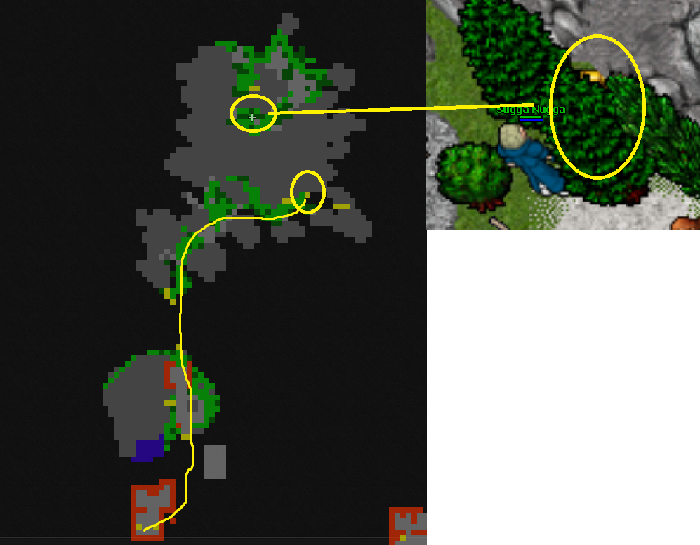
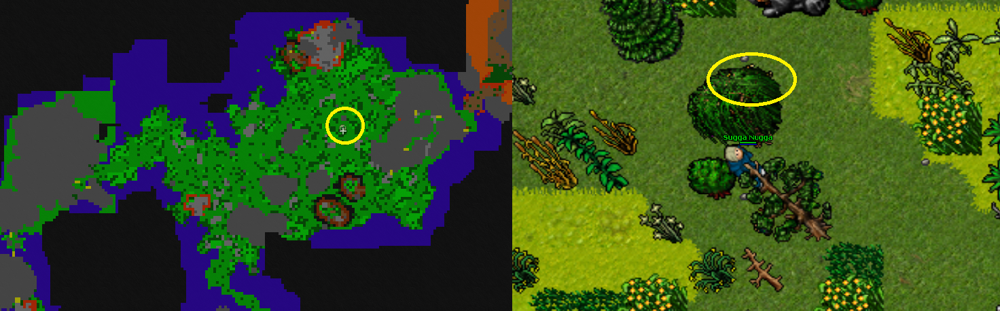
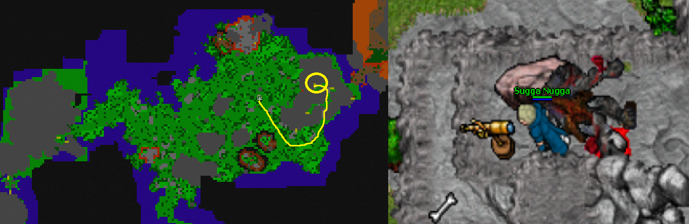
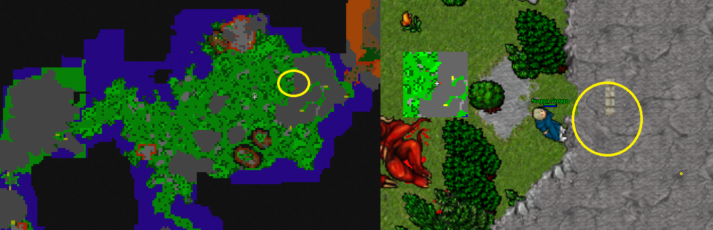
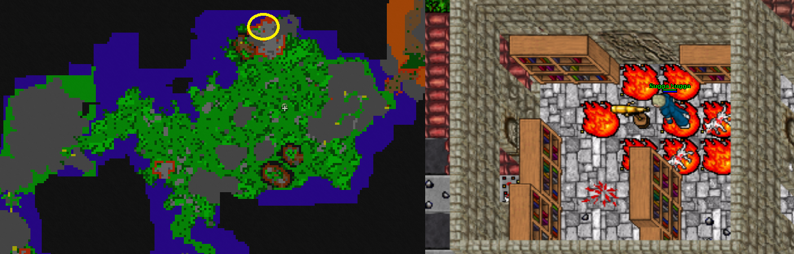
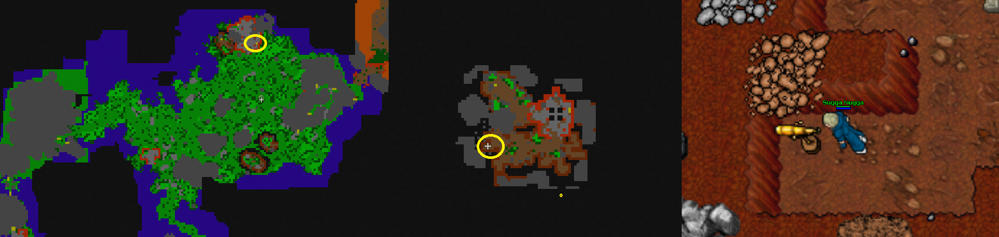
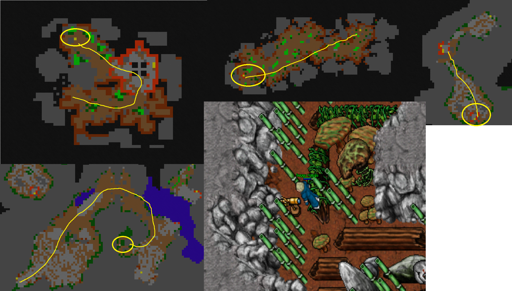
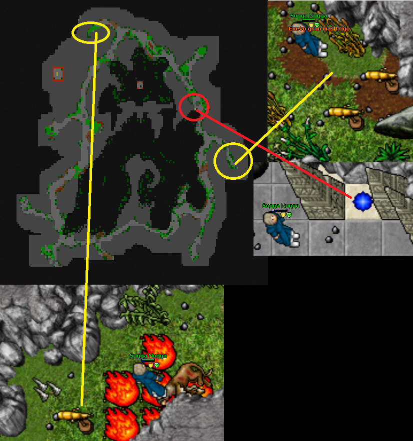

Kingdom Farmlands
As you can think of it’s name, it won’t be easy task to make this quest alone. Here is a lot of harder monsters on your way and despite if you think it’s unfair they don’t feel your emotions. As you might have thought you just finished something big, oh no it’s not even begun yet. Here starts the 1st part of a bigger quest line. Collect 6 scopes across the Farmlands and turn 3 lever scopes in order to continue your journey to area 2.
Requirements:
Access to Kingdom Farmlands checkpoint 1
Recommended level:
Solo: ek/rp 3500, mage 4000
Duo: ek/rp & mage 2700-3000
Lever scopes
Best way to do this is to start with lever scopes as they are the easy part. 1st lever scope, that opens the 3rd wall, is a little before you enter the bigger area, within the mountains, hidden beneath the rock and trees.

The 2nd lever scope is in the middle of the big green area. It is hiding behind a willow tree. This opens the 1st wall.

3rd lever scope is at the giants mountain to the East. Go there from South-East entrance and inside the mountain from the most Northern stairs. Go full up and there’s ubergiants on your way to the scope. This opens the 2nd wall.

Scopes
Now you can grab the 6 scopes. 1st scope is hugging this mountain, totally invisible.

2nd scope is to the North from here at the top of the ruins past the Methuselah Ophiuchuses. As you go up the ladders there’s 2 Lily the Samoyed’s. There’s also 4 more to come before the scope.

3rd scope is underground and rest of those aswell. First up go downstairs from the ruins and keep going South-West. There’s some craaks on the way. Be advised! This scope summons 2 vermithraxes on the path to the underground up North!

4th scope is even more underground. Go North-West corner and down into the hole. Go the West teleport then South and teleport again. Here is gonna be a little tough without a blocker: alot of Elder Ophiucuses and some lilys. The scope also summons 1 procyon nearby and Vermithrax to the South near the next teleport.

Now hop into the teleport and towards to the 5th and 6th scope. As you arrive to this next place go North. There’s 5th scope and then continue East for the 6th scope. NOTE: This scope summons Vermithrax and Orbithrax next to you so be careful. After pulling the 6th scope head to the middle stairs down and hop into the teleport to continue your journey to the checkpoint 2.
